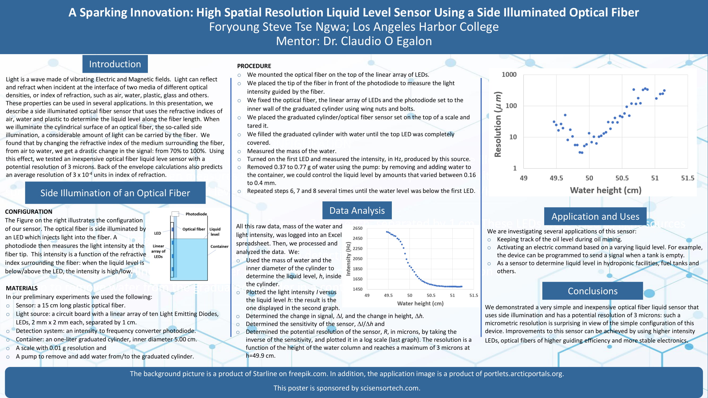

Author - Steve Foryoung
Description - Optical Fiber Liquid Level Sensor
I worked on this project with my professor during my first year of college. It was a good learning experience for me as I learned and built a cool
application of fiber optics - a marketable product which could be used by many companies. See more about
this below.
